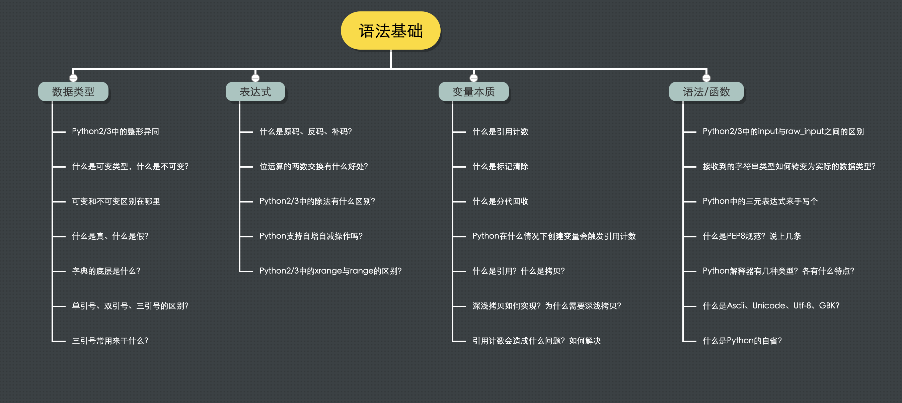

一.数据类型
####1.python2/3中的整形异同?
python2中的除法，结果为整型数字（int型），例如 10/5=2，10/3=3，小数位向下取整
python3中的除法，结果为浮点型数字（float型）结果小数位最多保留16位小数
####2.什么是可变类型,什么是不可变类型?
可变类型: 列表（list）,字典（dict）,集合（set）
不可变类型: 元组，bool，数字（int），str
可变类型无论怎么改变,依然指向原内存地址
不可变类型的对象发生改变,会重新开辟新的空间,指向新的内存地址
####3.可变类型和不可变类型的区别?
可变类型无论怎么改变,依然指向原内存地址
不可变类型的对象发生改变,会重新开辟新的空间,指向新的内存地址
####4.什么是真,什么是假?
Python 中常用的数据类型bool（布尔）类型的实例对象（值）就两个，真和假，分别用True和False表示
####5.字典的底层是什么?
在Python中，字典是通过散列表或说哈希表实现的。字典也被称为关联数组，还称为哈希数组等。也就是说，字典也是一个数组，但数组的索引是键经过哈希函数处理后得到的散列值。哈希函数的目的是使键均匀地分布在数组中，并且可以在内存中以O(1)的时间复杂度进行寻址，从而实现快速查找和修改。
####6.单引号,双引号,三引号区别?
单引号和双引号都可以用来表示一个字符串
单引号，双引号都用到包裹字符串，唯一不同用法在于如果字符串内有需要转义
的字符时候 ，单引号必须加反斜杠
3个引号还有一个特别棒的作用就是：加注释
####7.三引号常用来干什么?
加注释
####8.redis端口号,mongodb端口号,mysql端口号?
redis端口号:6379
mongodb端口号:27017
mysql端口号:3306
###二.表达式
####1.什么是源码,反码,补码?
(1)无论是源码还是反码甚至补码.它们都是二进制的不同的表现形式.
(2)任何数据在内存中都是以数据的补码形式存储的.
1). 正数的反码就是其原码.
2). 负数的反码在原码的基础之上 符号位不变 其他位取反.
-4
原码:10000000 00000000 00000000 00000100
反码:11111111 11111111 11111111 11111011
1). 正数的补码就是其原码. 所以正数的原码、反码、补码都是一样的.
2). 负数的补码: 在其反码的基础之上加1.
-6
原码: 10000000 00000000 00000000 00000110
反码: 11111111 11111111 11111111 11111001
补码: 11111111 11111111 11111111 11111010
####2.位运算的两数交换有什么好处?
位运算就是直接对整数在内存中的二进制位进行操作。好处:主要目的是节约内存，使你的程序速度更快
####3.python2和python3中的除法有什么区别?
- python2中的除法，结果为整型数字（int型），例如 10/5=2，10/3=3，小数位向下取整
- python3中的除法，结果为浮点型数字（float型）结果小数位最多保留16位小数
Python2 除法是整形
python3 除法是浮点型
####4.python支持自增自减操作吗?
我们知道， python中的数字类型是不可变数据。也就是数字类型数据在 内存 中是不会发生改变，当变量值发生改变时，会新申请一块内存赋值为新值，然后将变量指向新的内存地址。
实验如下:
1 | a = 10 |
可以看到当 a 的值发生改变时，a 指向的内存地址也发生了改变。而在C语言中，a 指向的内存地址并不会发生改变，而是改变内存的内容。
+= 是改变变量，相当于重新生成一个变量，把操作后的结果赋予这个新生成的变量。
++ 是改变了对象本身，而不是变量本身，即改变数据地址所指向的内存中的内容。
既然 Python 中的数字类型是不可变的，那何来的“自增”这么一说呢？
####5.python2和python3中的xrange与range的区别?
Python2中:
xrange,不会再内存中立即创建,而是边循环边创建
range,在内存中立即把所用的值都创建
python3中:
range,不会再内存中立即创建,而是边循环边创建.
并且取消了xrange
三.变量本质
####1.什么是引用计数?
在引用计数中,每一个对象负责维护对象的所有引用的计数值,当有新的引用指向该对象,引用计数加一,去掉一个引用,引用计数减一,当引用计数为0时,被垃圾回收内存清零…
####2.什么是标记清除?
1.标记-清除机制，顾名思义，首先标记对象（垃圾检测），然后清除垃圾（垃圾回收）。如图:
2.首先初始所有对象标记为白色，并确定根节点对象（这些对象是不会被删除），标记它们为黑色（表示对象有效）。
3.将有效对象引用的对象标记为灰色（表示对象可达，但它们所引用的对象还没检查），检查完灰色对象引用的对象后，将灰色标记为黑色。
4.重复直到不存在灰色节点为止。最后白色结点都是需要清除的对象。
####3.什么是分代回收?
分代技术是一种典型的以空间换时间的技术，这也正是java里的关键技术。这种思想简单点说就是：对象存在时间越长，越可能不是垃圾，应该越少去收集。
这样的思想，可以减少标记-清除机制所带来的额外操作。分代就是将回收对象分成数个代，每个代就是一个链表（集合），代进行标记-清除的时间与代内对象
存活时间成正比例关系。
从上面代码可以看出python里一共有三代，每个代的threshold值表示该代最多容纳对象的个数。默认情况下，当0代超过700,或1，2代超过10，垃圾回收机制将触发。
0代触发将清理所有三代，1代触发会清理1,2代，2代触发后只会清理自己。
例如:
python将对象分为 0代, 1代, 2代,刚创建的对象为0代，对象分配次数和取消分配对象的次数的差大于阈值时就会触发垃圾回收，他们对应的阈值分别为700,10,10。
1
2
3
4import gc
print(gc.get_threshold())
[700,10,10] # 输出结果经过 “标记-清除” 存活的对象,对象的代数+1,归入下一代对象。10次0代回收出发1次一代回收，10次1代回收出发1次2代回收，经过多代回收存活下来的对象，则不会是涉及循环引用的对象
1
gc.set_threshold([600,15,15]) # 更改阈值
####4.python在什么情况下创建变量会触发引用计数?
当有新的引用指向该对象,会触发引用计数,引用计数加一..
####5.什么是引用,什么是拷贝?
(1)在 Python 程序中，每个对象都会在内存中申请开辟一块空间来保存该对象，该对象在内存中所在位置的地址被称为引用
例如:引用就是给课室一个课室号。给车一个车牌号。
(2)在程序开发过程中，经常涉及到数据的传递，在数据传递使用过程中，可能会发生数据被修改的问题。为了防止数据被修改，就需要在传递一个副本，即使副本被修改，也不会影响原数据的使用。为了生成这个副本，就产生了拷贝。
####6.深拷贝和浅拷贝如何实现?为什么需要深拷贝和浅拷贝?
(1)深拷贝:我们希望在改变新的数组（对象）的时候，不改变原数组（对象）
(2)浅拷贝:将原对象或原数组的引用直接赋给新对象，新数组，新对象／数组只是原对象的一个引用
实现浅拷贝和深拷贝:
数组浅拷贝:如果是数组，可以使用数组的一些方法实现：slice()，concat()返回一个新数组的特性实现拷贝。
数组深拷贝:JSON.parse(JSON.stringify())不仅适用于数组还适用于对象。
四.语法/函数
####1.python2和python3中的input和raw_input之间的区别?
1、在 Python2.x 中 raw_input( ) 和 input( )，两个函数都存在，其中区别为:
- raw_input( ) 将所有输入作为字符串看待，返回字符串类型。
- input( ) 只能接收”数字”的输入，在对待纯数字输入时具有自己的特性，它返回所输入的数字的类型（ int, float ）。
2、在 Python3.x 中 raw_input( ) 和 input( ) 进行了整合，去除了 raw_input( )，仅保留了 input( ) 函数，其接收任意任性输入，将所有输入默认为字符串处理，并返回字符串类型。
####2.接受到的字符串类型如何转变为实际的数据类型?
例如转换为int类型
int(str)
1 | # 数字转换为字符串 |
####3.python中的三元表达式来手写一个?
1 | a = lambda x:1 if x > 5 else 2 ---------- if 与 else 后面不加 ： |
####4.什么是pep8规范?说上几条?
1 缩进。4个空格的缩进（编辑器都可以完成此功能），不使用Tap，更不能混合使用Tap和空格。
2 每行最大长度79，换行可以使用反斜杠，最好使用圆括号。换行点要在操作符的后边敲回车。
3 类和top-level函数定义之间空两行；类中的方法定义之间空一行；函数内逻辑无关段落之间空一行；其他地方尽量不要再空行。
4 模块导入的顺序：按标准、三方和自己编写顺序依次导入，之间空一行。
5 不要在一句import中多个库，比如import os, sys不推荐
6 避免不必要的空格
7 注释必须要有
8 函数命名要遵循规范
10 尽可能使用‘is’‘is not’取代‘==’，比如if x is not None 要优于if x。
11 使用基于类的异常，每个模块或包都有自己的异常类，此异常类继承自Exception。
12 异常中try的代码尽可能少。
####5.python解释器有几种类型?各有什么特点?
- CPython
- c语言开发的 使用最广的解释器
- IPython
- 基于cpython之上的一个交互式计时器 交互方式增强 功能和cpython一样
- PyPy
- 目标是执行效率 采用JIT技术 对python代码进行动态编译，提高执行效率
- JPython
- 运行在Java上的解释器 直接把python代码编译成Java字节码执行
- IronPython
- 运行在微软 .NET 平台上的解释器，把python编译成. NET 的字节码
####6.什么是ASCII,Unicode,utf-8,gbk?
ascii 是最早美国用的标准信息交换码，把所有的字母的大小写，各种符号用 二进制来表示，共有256中，加入些拉丁文等字符，1bytes代表一个字符，
Unicode是为了统一世界各国语言的不用，统一用2个bytes代表一个字符，可以表达2**16=65556个，称为万国语言，特点：速度快，但浪费空间，
可以用在内存处理中，兼容了utf-8，gbk，ASCII，
utf-8 为了改变Unicode的这种缺点，规定1个英文字符用1个字节表示，1个中文字符用3个字节表示，特点；节省空间，速度慢，用在硬盘数据传输，网络数据传输，相比硬盘和网络速度，体现不出来的，
gbk 是中文的字符编码，用2个字节代表一个字符
####7.什么是python的自省?
自省就是运行时能够获得对象的类型.
例如:type(),dir(),getattr(),hasattr(),isinstance().
####第二天